People
Keep track of the people you work with next to your notes. Cairn knows who is in each meeting, what you owe each other and when you last spoke, and your assistant can use all of it. Everything stays in your workspace as notes you own.
People is in the sidebar (⌘7). If you don't need it, hide it in Settings → Sidebar & views.
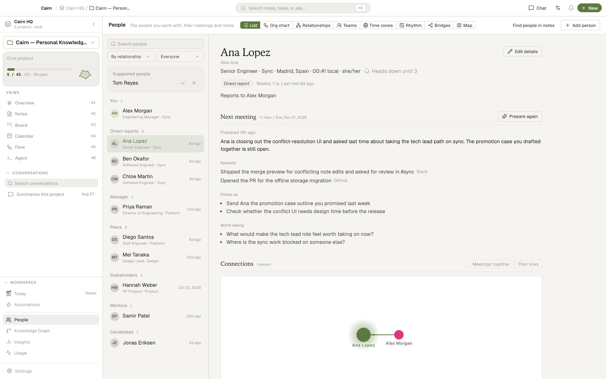
The People view
The list is grouped by how someone relates to you by default: direct reports, manager, peers, stakeholders, mentors and candidates. Group it by team, location (with each place's local time), when you last met or name instead; Cairn remembers your choice. You are pinned at the top. Search by name, filter by relationship, and use Add person to create one.
A switcher at the top of the view swaps the list for a picture of the same people: Teams, and the Org chart, Relationships, Time zones, Rhythm, Bridges and Map. Click anyone in a picture to open them in a side panel.
When Cairn finds someone while capturing a meeting or when an assistant adds them, they land in a Suggested people tray at the top of the list. Confirm to keep them, or dismiss: a dismissed person is remembered, so they don't come back.
A person's page
- Header — name, aliases, relationship, 1:1 cadence (weekly, biweekly or monthly), when you last met and who they report to. Edit changes any of it.
- Timeline — their meetings with the notes written for each, notes that mention them, and tasks they own, newest first.
- Persona note — an ordinary note about the person (goals, working style). Edit it on their page or choose Open in Notes. While People is on, persona notes stay out of the Notes list and note pickers; a Show people's notes switch in Notes brings them back. The file stays where it was, so Obsidian, links and search are unaffected.
- Slack details — with a Slack app connected, their title, local time and pronouns show under the name, refreshed in the background. They are read when you look and never written into your notes.
- Teams — every team they're on, with add and remove, and the teams they were on before.
- Where they are — a location fills in their time zone, which puts them on the map and the time-zone strip.
- Duplicates — when Cairn suggests "Sam" and you already have "Sam Whitfield", choose Same as… on the suggestion, or Duplicate in a person's settings. Their meetings, notes, tasks and teams move over, and the other name becomes an alias.
Teams
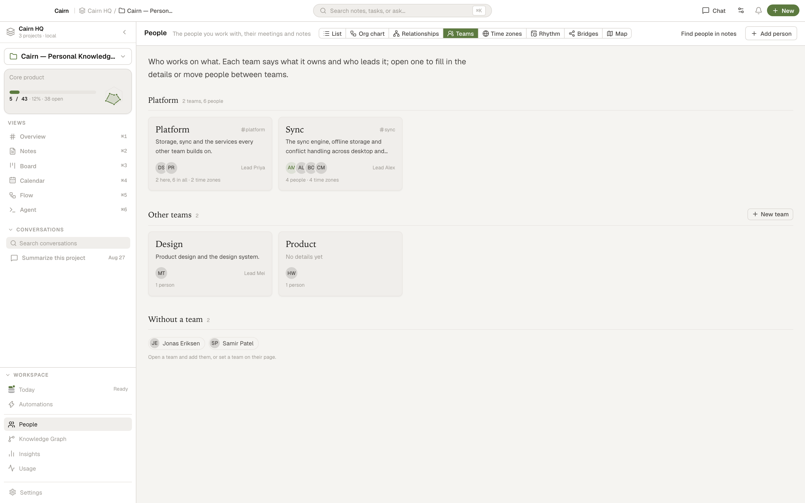
A team has a page: what it owns, who leads it, the team it sits under, its channel and links, and its members. Open a team from Teams to read or edit it, add and remove members, or start a new team with New team.
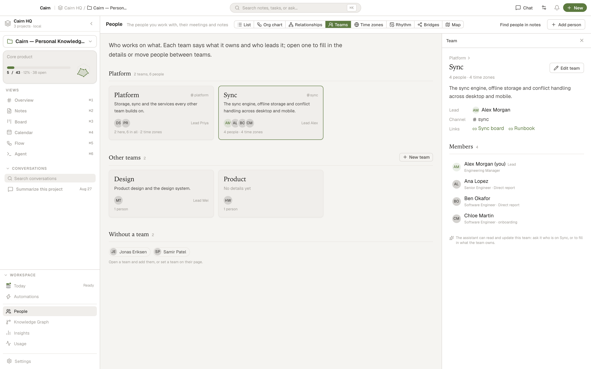
- More than one team — everyone has one home team, and can also be in any number of guilds, projects and committees (set a team's kind on its page).
- Roles — each member can have a role on the team, such as "Tech lead" or "Embedded designer".
- History — taking someone off a team keeps when they joined and left, and the team page lists past members. Moving someone to another team ends their old membership instead of erasing it.
- Renames and duplicates — a team keeps its members through a rename, on every device. The same team made on two devices becomes one. If two teams still end up with one name, the team page says so and merges them; Merge into folds one team into another.
- Checks — the team page notes when its lead isn't on it, or when nobody on it reports to them.
Who manages whom
Marking someone as your manager or direct report (or mentor, buddy or stakeholder) and the line between you in the org chart and Relationships are the same fact: change one and the other follows. Taking the relationship off keeps them as a former manager, so the history stays.
Meetings & attendees
A meeting note can list who was there with two optional properties at the top of the file:
---
attendees: ["[[Ana Lopez]]", "[[Ben Okafor]]"]
date: 2026-11-19
---The wikilinks show as links in Obsidian's Properties panel. Cairn also picks up an **Attendees:** line in the note body and calendar attendees from Today, and writes the properties back when attendance changes in the app. A person listed by more than one of these stays at the meeting until every source drops them, so removing someone on one device isn't undone by another. A name that fits two people is left as a suggestion for you to settle.
Checklist items written with an owner, like - [ ] **Ana** - validate the PR or - [ ] @Ana to send the deck, show up as that person's open items.
The 1:1 loop
- Next meeting — a person's page shows your next meeting with them and a Prepare button.
- Prep brief — a short summary from your last meeting, open items and what they've recently worked on, with follow-ups and questions worth asking. It describes work, never activity counts or time online. Cairn also prepares one automatically about two hours before a small calendar meeting with someone you meet on a cadence.
- Overdue 1:1s — Today lists "No 1:1 with Ben in 3 weeks" when a cadence slips, and shows who is on each meeting, linked to the people you track.
Pictures of your people
Pick a picture from the switcher at the top of the People view. Insights keeps the Relationships and Org chart canvases too.
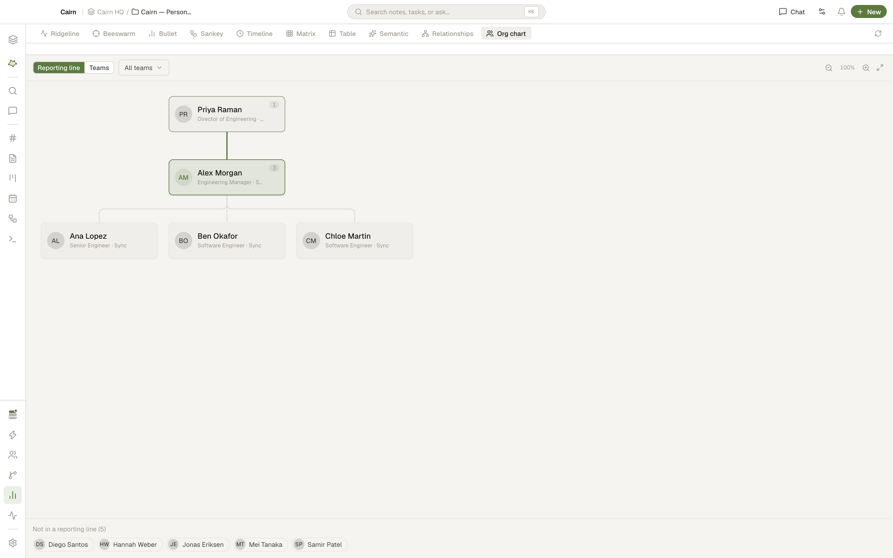
Org chart shows reporting lines with you highlighted, each card with the person's role and team. Pick a team to dim everyone outside it. Anyone outside a reporting line is listed underneath. Zoom with the buttons or ⌘/Ctrl and scroll.
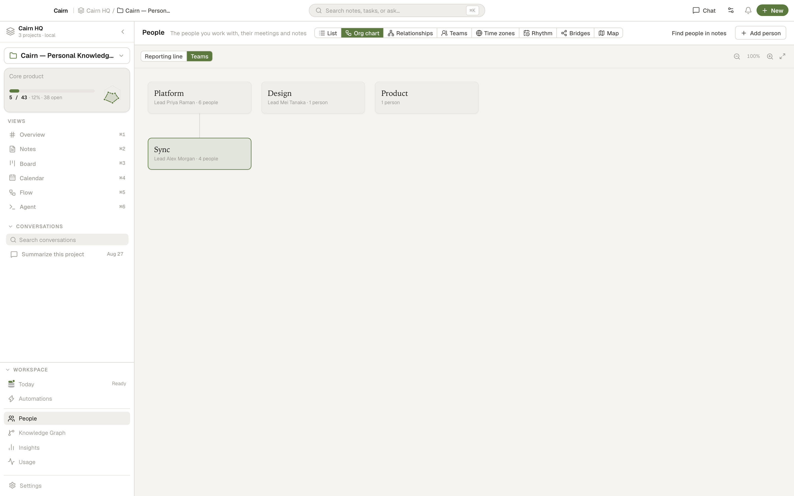
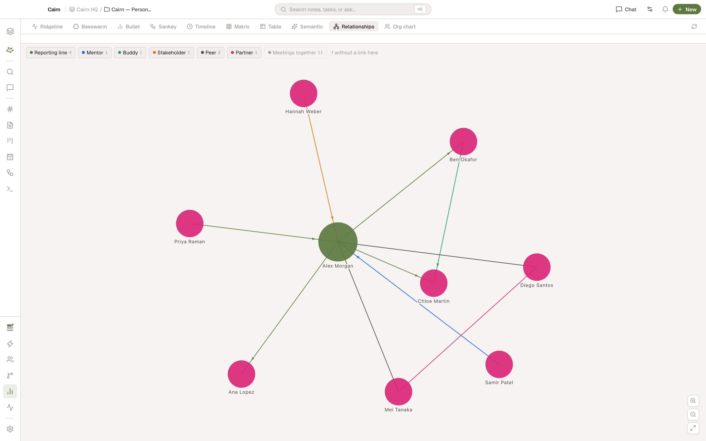
Relationships draws the people you work with and how they connect, with a filter chip per relationship type and an optional "meetings together" layer.
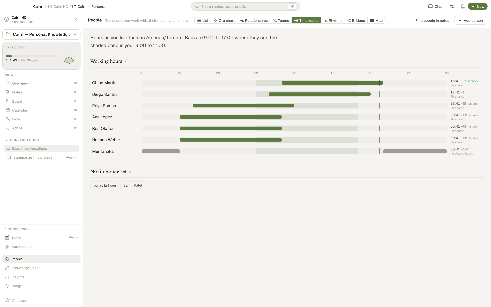
Time zones lays out each person's working day against yours in a 24-hour strip, with who is at work or asleep right now.
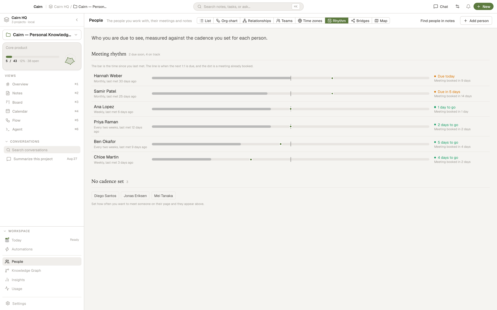
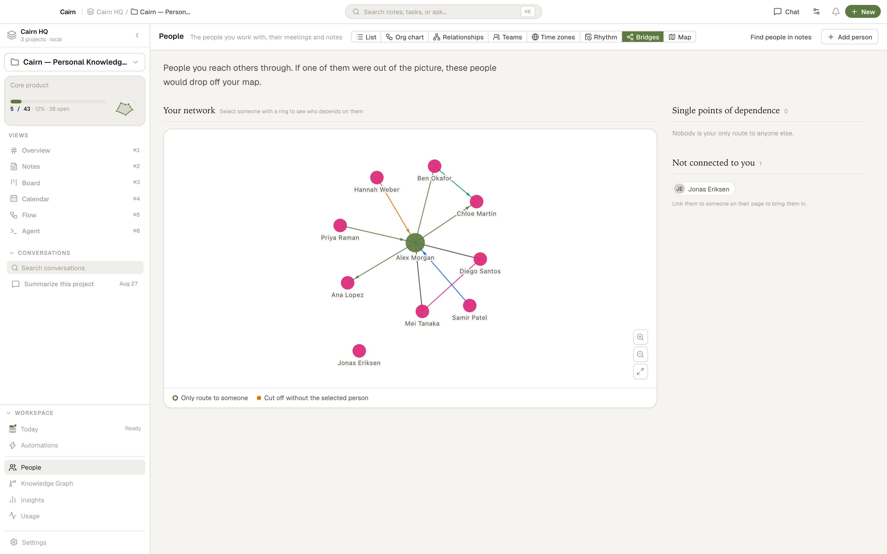
Rhythm shows who you are due to see, against the 1:1 cadence you set. Bridges shows the people you reach others through: anyone who is your only route to someone has a ring, and selecting them lights up the people who would drop off your map without them.
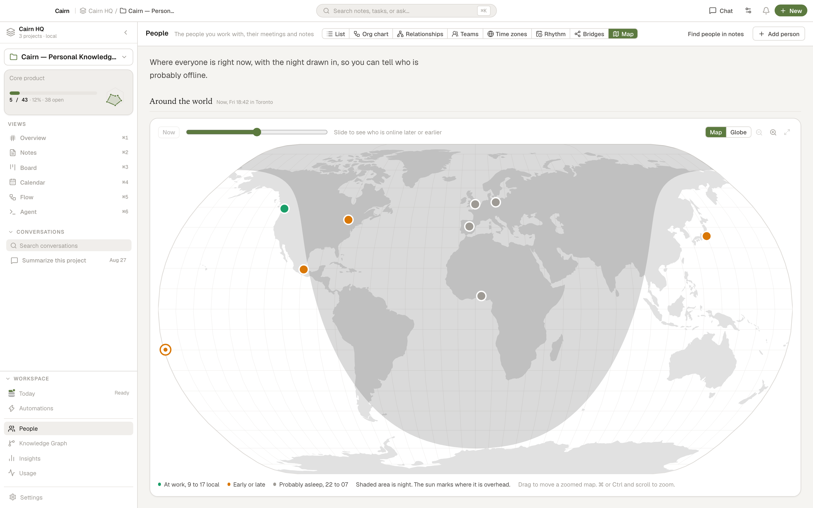
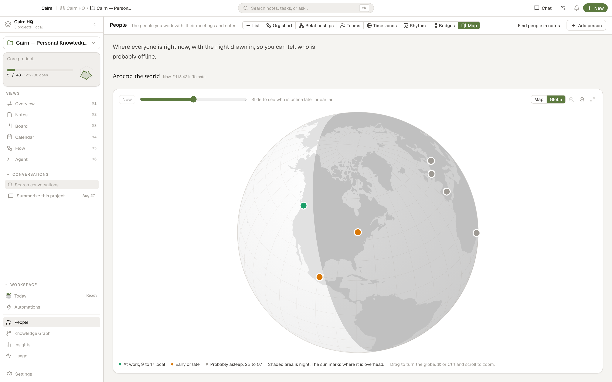
Map puts everyone on a world map from their time zone, shades the night and marks who is probably offline. A slider shows who is online later or earlier. Zoom and pan the map, or switch to Globe and drag to turn the Earth.
@ a person in chat
Type @ in the chat box or in a coding session and pick someone you track, or just write @Ana. When you send, Cairn gives the assistant what it knows about them: their relationship, recent meetings, open items and last 1:1. Ask "prep my 1:1 with @Ana" and it starts from facts, not guesses.
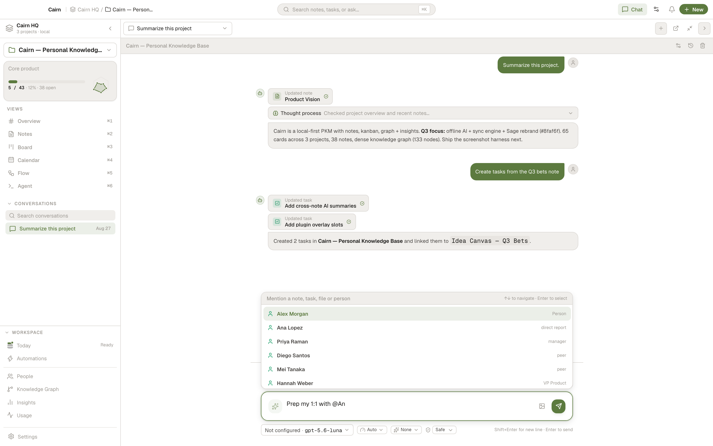
Matching is exact on a name or alias, ignoring case and accents. If two people share a name, the assistant asks which one you mean. Private persona notes stay out of what it receives.
Assistants and connected agents also get a people tool: they can look people up, list teams and who is on them, record who attended a meeting note and when, set a task's owner, put people on teams, record that a relationship ended, and merge a duplicate person. Ask "who is on Sync?", "put Ana and Ben on Sync, led by Alex" or "Priya stopped being my manager in May". Anything they infer rather than read stated is added as a suggestion for you to confirm. See MCP Server.
Bringing in existing notes
If you already keep notes about people, Find in notes in the People view scans for them: notes tagged person, notes in a People folder or a Discussions/<Name> folder, and meeting notes with an **Attendees:** line or an attendees property. It shows what it found and how sure it is, and you tick what to bring in.
- Preview first — it shows exactly what would change before anything is applied.
- Your notes keep their text — applying links each person to their existing note, attaches the people a meeting lists, and assigns checklist items written with a name.
- Ambiguous names wait — two notes called "Sam Whitfield", or a bare "Chris" with two Chrises, are left alone until you settle them.
- Safe to repeat — running it again changes nothing.
Privacy
Everything lives in your local workspace and syncs like the rest of it. Mark a person private from assistants and their persona note is left out of every assistant search and read, in chat, coding sessions and MCP; you still see it in the app. Slack details are fetched when you view a page and never saved.